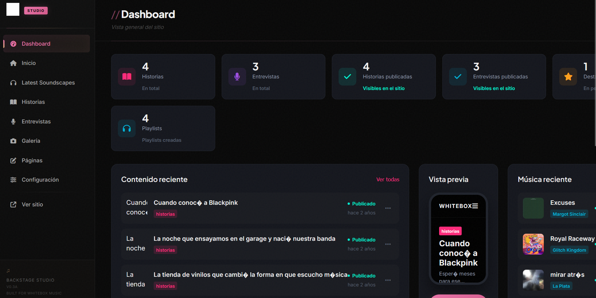

El problema del cliente
WhiteBox Music necesitaba una presencia digital que reflejara la identidad de su estudio musical: moderna, profesional y con capacidad de publicar contenido nuevo sin depender de un programador. El sitio debía incluir reproductores de audio, galería de fotos y un sistema de noticias que el equipo pudiera gestionar desde su celular.
El desafío técnico
Crear una revista musical con CMS propio que permita publicación instantánea de notas, integración de audio streaming y una galería interactiva, todo sin plugins de terceros ni dependencias externas.
CMS independiente a medida
Desarrollé un CMS (Content Management System) a medida que permite al equipo de WhiteBox publicar notas, subir fotos y gestionar contenido desde cualquier dispositivo. El sistema funciona con Firebase como backend, garantizando sincronización en tiempo real y costos de hosting mínimos.
El diseño neón moderno refleja la identidad del estudio, mientras que la arquitectura técnica garantiza carga rápida y experiencia fluida en móviles y escritorio.
El Panel /backstage
El panel de administración permite al equipo de WhiteBox publicar contenido nuevo en segundos. Desde aquí pueden subir fotos, escribir notas de prensa, gestionar la galería y actualizar reproductores de audio. Todo funciona desde el navegador sin instalar nada.

Impacto medible
Una revista musical 100% autogestionable que permite al equipo publicar contenido nuevo sin depender de programadores. El CMS propio elimina la dependencia de WordPress y sus plugins lentos.